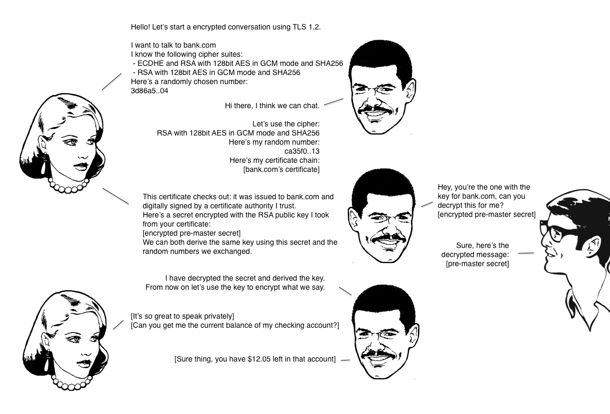
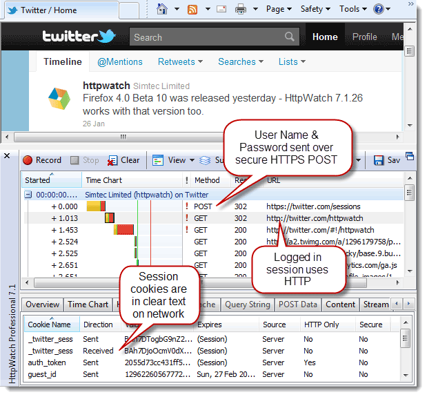

Web Scrap
Table of Contents
1 HTTP 协议入门
1.1 HTTP/0.9
HTTP 是 基于 TCP/IP 协议的应用层协议 ，不涉及数据包（packet）传输，主要规定了客户端和服务器之间的通信格式，默认使用 80 端口。最早版本是 1991 年发布的 0.9 版，该版本极其简单，只有一个命令 GET 。
GET /index.html
表示 TCP 连接建立后，客户端向服务器请求网页文件 index.html 。协议规定，服务器只能响应 HTML 格式的字符串，不能回应别的格式。服务器发送完毕，就关闭 TCP 连接。
1.2 HTTP/1.0
1.2.1 简介
1996 年 5 月，HTTP/1.0 发布，内容大大增加。首先，任何格式的内容都可以发送。这使得互联网不仅可以传输文字，还能传输图像、视频、二进制文件。这为互联网的大发展奠定了基础。其次，除了 GET 命令，还引入了 POST 命令和 HEAD 命令，丰富了浏览器与服务器的互动手段。再次，HTTP 请求和响应的格式也变了，除了数据部分，每次通信都必须包括头信息（HTTP header），用来描述一些元数据。
其他的新增功能还包括状态码（status code）、多字符集支持、多部分发送（multi-part type）、权限（authorization）、缓存（cache）、内容编码（content encoding）等。
1.2.2 请求格式
GET / HTTP/1.0 User-Agent: Mozilla/5.0 (Macintosh; Intel Mac OS X 10_10_5) Accept: */*
第一行是请求命令，必须在尾部添加协议版本 HTTP/1.0 。后面是多行头信息，描述客户端的情况。
1.2.3 响应格式
HTTP/1.0 200 OK
Content-Type: text/plain
Content-Length: 137582
Expires: Thu, 05 Dec 1997 16:00:00 GMT
Last-Modified: Wed, 5 August 1996 15:55:28 GMT
Server: Apache 0.84
<html>
<body>Hello World</body>
</html>
响应的格式是「头信息 + 一个空行 \r\n + 数据」，其中，第一行是「协议版本 + 状态码（status code） + 状态描述」。
1.2.4 Content-Type
关于字符的编码，HTTP/1.0 规定， 头信息必须是 ASCII 编码，后面的数据可以是任何格式。 服务器响应的时候，必须告诉客户端，数据是什么格式，这就是 Content-Type 字段的作用。这些数据类型总称为 MIME 类型 ，每个值包括一级类型和二级类型，之间用斜杠分隔。
text/plain text/html text/css image/jpeg image/png image/svg+xml audio/mp4 video/mp4 application/javascript application/pdf application/zip application/atom+xml
application/vnd.debian.binary-package
Content-Type: text/html; charset=utf-8
Accept: */*
<meta http-equiv="Content-Type" content="text/html; charset=UTF-8" /> <!-- 等同于 --> <meta charset="utf-8" />
1.2.5 Content-Encoding
发送的数据可以经过压缩的， Content-Encoding 字段说明 数据的压缩方法 。
gzip compress deflate
Accept-Encoding: gzip, deflate
1.2.6 缺点
HTTP/1.0 的主要缺点是， 每个 TCP 连接只能发送一个请求，发送数据完毕连接就关闭， 如果还要请求其他资源，必须再新建一个连接。 TCP 连接的新建成本很高，因为需要客户端和服务器三次握手，并且开始时发送速率较慢（slow start），所以 HTTP/1.0 的性能比较差。 随着网页加载的外部资源越来越多，这个问题就愈发突出了。
Connection: keep-alive
要求服务器不要关闭 TCP 连接，以便其他请求复用。服务器同样回应这个字段，一个可以复用的 TCP 连接就建立了，直到客户端或服务器主动关闭连接。但是，这不是标准字段，不同实现的行为可能不一致，因此不是根本的解决办法。
1.3 HTTP/1.1
1997 年 1 月，HTTP/1.1 发布，只比 1.0 版本晚了半年。它进一步完善了 HTTP 协议，一直用到了 20 年后的今天，直到现在还是最流行的版本。
1.3.1 持久连接
HTTP/1.1 的最大变化就是引入了 持久连接（persistent connection），即 TCP 连接默认不关闭，可以被多个请求复用， 不用声明 Connection: keep-alive 。客户端和服务器发现对方一段时间没有活动，就可以主动关闭连接。不过，规范的做法是，客户端在最后一个请求时，发送 Connection: close ，明确要求服务器关闭 TCP 连接。
虽然 HTTP/1.1 允许复用 TCP 连接，但是 同一个 TCP 连接里面，所有的数据通信是按次序进行的。服务器只有处理完一个响应，才会处理下一个。如果前面的响应特别慢，后面就会有许多请求排队等待。这称为「队头堵塞」（head-of-line blocking）。
为了避免这个问题，有两种方法：一是减少请求数，二是同时多开持久连接。这导致了很多的网页优化技巧，比如合并脚本和样式表、将图片嵌入 CSS 代码、域名分片（domain sharding）等等。如果 HTTP 协议设计得更好一些，这些额外的工作是可以避免的。
1.3.2 管道机制
HTTP/1.1 还引入了 管道机制（pipelining），即在同一个 TCP 连接里面，客户端可以同时发送多个请求， 进一步改进了 HTTP 协议的效率。
举例来说，客户端需要请求两个资源。以前的做法是，在同一个 TCP 连接里面，先发送 A 请求，然后等待服务器响应，再发出 B 请求。管道机制则是 允许浏览器同时发出 A 请求和 B 请求，但是服务器还是按照顺序，先响应 A 请求，完成后再响应 B 请求。
1.3.3 Content-Length
同一个 TCP 连接现在可以接收多个响应，势必就要有一种机制，确认数据包的哪一部分是属于同一个响应的。这就是 Content-length 字段的作用，声明响应的数据长度。在 HTTP/1.0 中， Content-Length 字段不是必需的，因为浏览器发现服务器关闭了 TCP 连接，就表明收到的数据包已经全了。
Content-Length: 3495
表示这个响应的长度是 3495 字节，后面的字节就属于下一个响应了。
1.3.4 分块传输编码
使用 Content-Length 的前提条件是，服务器发送响应之前，必须知道响应的数据长度。这意味着服务器要等到所有操作完成，才能发送数据，效率不高。更好的处理方法是， 产生一块数据，就发送一块，采用「流模式」（stream） 取代「缓存模式」（buffer）。因此， HTTP/1.1 规定可以不使用 Content-Length ，而使用 「分块传输编码」（chunked transfer encoding），只要请求或响应的头信息有 Transfer-Encoding 字段，就表明响应将由数量未定的数据块组成。
Transfer-Encoding: chunked
每个非空的数据块前有一个 16 进制的数值，表示这个块的长度。最后是一个大小为 0 的块，表示本次响应的数据发送完毕。
HTTP/1.1 200 OK Content-Type: text/plain Transfer-Encoding: chunked 25 This is the data in the first chunk 1C and this is the second one 3 con 8 sequence 0
1.3.5 其他特性
HTTP/1.1 新增了许多动词方法： PUT 、 PATCH 、 HEAD 、 OPTIONS 、 DELETE 。
Host: www.example.com
Host 字段可以将请求发往同一台服务器上的不同网站，为虚拟主机的使用打下了基础。
1.4 SPDY
2009 年，谷歌公开了自行研发的 SPDY 协议，主要解决 HTTP/1.1 效率不高的问题。这个协议在 Chrome 浏览器上证明可行以后，就被当作 HTTP/2 的基础，主要特性都在 HTTP/2 之中得到继承。
1.5 HTTP/2
2015 年 HTTP/2 发布。它不叫 HTTP/2.0，是因为标准委员会不打算再发布子版本了，下一个新版本将是 HTTP/3。
1.5.1 二进制协议
HTTP/1.1 的头信息必须是文本（ASCII 编码），而数据体可以是文本，也可以是二进制。 HTTP/2 则是一个彻底的二进制协议，头信息和数据体都是二进制，并且统称为「帧」（frame）：头信息帧和数据帧。
二进制协议的一个好处是，可以定义额外的帧。HTTP/2 定义了近 10 种帧，为将来的高级应用打好了基础。如果使用文本实现这种功能，解析数据将会变得非常麻烦，二进制解析则方便得多。
1.5.2 多工
HTTP/2 复用 TCP 连接， 在一个连接里，客户端和浏览器都可以同时发送多个请求或响应，而且不用按照顺序一一对应，这样就避免了「队头堵塞」。 举例来说，在一个 TCP 连接里面， 服务器同时收到了 A 请求和 B 请求，先响应 A 请求，但发现处理非常耗时，于是先发送 A 请求已经处理好的部分，接着响应 B 请求，完成后再响应 A 请求剩下的部分。 这种双向、实时的通信，就叫做多工（multiplexing）。
1.5.3 数据流
因为 HTTP/2 的数据包是不按顺序发送的，同一个连接里面连续的数据包，可能属于不同的响应。因此必须要对数据包做标记，指出它属于哪个回应。HTTP/2 将 每个请求或响应的所有数据包，称为一个数据流（stream）。每个数据流都有独一无二的编号。数据包发送时，必须标记数据流 ID，用来区分它属于哪个数据流。 另外还规定，客户端发出的数据流，ID 一律为奇数，服务器发出的，ID 为偶数。
数据流发送到一半时，客户端和服务器都可以发送 RST_STREAM 帧，取消这个数据流。HTTP/1.1 取消数据流的唯一方法就是关闭 TCP 连接。这就是说， HTTP/2 可以取消某一次请求，同时保证 TCP 连接还打开着， 可以被其他请求使用。
客户端可以指定数据流的优先级。 优先级越高，服务器就会越早响应。
1.5.4 头信息压缩
HTTP 协议不带有状态，每次请求都必须附上所有信息。 所以，请求的很多字段都是重复的，比如 Cookie 和 User Agent ，一模一样的内容，每次请求都必须附带，会浪费很多带宽，也影响速度。
HTTP/2 对这一点做了优化，引入了 头信息压缩机制（header compression） 。一方面， 头信息使用 gzip 或 compress 压缩后再发送； 另一方面， 客户端和服务器同时维护一张头信息表，所有头信息字段都存入这个表，生成一个索引号，以后就不发送同样字段了，只发送索引号， 这样就提高速度了。
1.5.5 服务器推送
HTTP/2 允许服务器未经请求，主动向客户端发送资源，这叫做服务器推送（server push）。常见场景是客户端请求一个网页，这个网页里面包含很多静态资源。正常情况下，客户端必须收到网页后，解析 HTML 源码，发现有静态资源，再发出静态资源请求。其实，服务器可以预期到客户端请求网页后，很可能会再请求静态资源，所以就主动把这些静态资源随着网页一起发给客户端了。
2 SSL/TLS 协议概述
互联网的通信安全，建立在 SSL/TLS 协议之上。本文简要介绍 SSL/TLS 协议的运行机制，重点是设计思想和运行过程，不涉及具体的实现细节。如果想了解这方面的内容，请参阅 RFC 文档。
2.1 作用
不使用 SSL/TLS 的 HTTP 通信，就是不加密的通信，所有信息明文传播，带来了三大风险。
- 窃听风险（eavesdropping）：第三方可以获知通信内容。
- 篡改风险（tampering）：第三方可以修改通信内容。
- 冒充风险（pretending）：第三方可以冒充他人身份参与通信。
SSL/TLS 协议是为了解决这三大风险而设计的，希望达到：
- 所有信息都是 加密传播 ，第三方无法窃听。
- 具有 校验机制 ，一旦被篡改，通信双方会立刻发现。
- 配备 身份证书 ，防止身份被冒充。
互联网是开放环境，通信双方都是未知身份，这为协议的设计带来了很大的难度。而且，协议还必须能够经受所有匪夷所思的攻击，这使得 SSL/TLS 协议。
2.2 历史
互联网加密通信协议的历史，几乎与互联网一样长。
- 1994 年，NetScape 公司设计了 SSL 协议（Secure Sockets Layer）的 1.0 版，但是未发布。
- 1995 年，NetScape 公司发布 SSL 2.0，很快发现有严重漏洞。
- 1996 年，SSL 3.0 问世，得到大规模应用。
- 1999 年，互联网标准化组织 ISOC 接替 NetScape 公司，发布了 SSL 的升级版 TLS 1.0 。
- 2006 年和 2008 年，TLS 进行了两次升级，分别为 TLS 1.1 和 TLS 1.2。
- 最新的变动是 2011 年 TLS 1.2 的修订版。
目前，应用最广泛的是 TLS 1.0，接下来是 SSL 3.0。但是，主流浏览器都已经实现了 TLS 1.2 的支持。 TLS 1.0 通常被标示为 SSL 3.1，TLS 1.1 为 SSL 3.2，TLS 1.2 为 SSL 3.3。
2.3 运行过程
SSL/TLS 协议的基本思路是公钥加密法：客户端先向服务器端索要公钥，然后用公钥加密信息，服务器收到密文后，用私钥解密。 这里有两个问题。
（1）如何保证公钥不被篡改？
解决方法： 将公钥放在数字证书中，只要证书是可信的，公钥就是可信的。
（2）公钥加密计算量太大，如何减少耗用的时间？
解决方法：每一次会话， 客户端和服务器端都生成一个「会话密钥」（session key）来加密信息。由于「会话密钥」是对称加密，所以运算速度非常快，而服务器公钥只用于加密「会话密钥」本身，这样就减少了加密运算的消耗时间。
因此 SSL/TLS 协议的基本过程是：
- 客户端向服务器端索要并验证公钥。
- 双方协商生成会话密钥。
- 双方采用会话密钥对通信进行加密。
前两步又称为「握手阶段」（handshake）。
2.4 握手阶段

「握手阶段」涉及四次通信，所有通信都是明文的。
2.4.1 客户端发出请求（ClientHello）
首先，客户端（通常是浏览器）先向服务器发出加密通信的请求，即 ClientHello。客户端主要向服务器提供以下信息：
- 支持的协议版本，比如 TLS 1.0。
- 客户端生成的随机数，稍后用于生成会话密钥。
- 支持的加密方法，比如 RSA 公钥加密。
- 支持的压缩方法。
客户端发送的信息之中不包括服务器的域名， 也就是说，理论上服务器只能包含一个网站，否则会分不清应该向客户端提供哪一个网站的数字证书。 这就是为什么通常一台服务器只能有一张数字证书。 对于虚拟主机的用户来说，这当然很不方便。2006 年， TLS 协议加入了 Server Name Indication 扩展，允许客户端向服务器提供它所请求的域名。
2.4.2 服务器响应（SeverHello）
服务器收到客户端请求后，向客户端发出响应，即 SeverHello。服务器的响应包含以下内容：
- 确认使用的加密通信协议版本，比如 TLS 1.0。如果浏览器与服务器支持的版本不一致，服务器关闭加密通信。
- 服务器生成的随机数，稍后用于生成会话密钥。
- 确认使用的加密方法，比如 RSA 公钥加密。
- 服务器证书。
除了上面这些信息， 如果服务器需要确认客户端的身份，就会再包含一项请求，要求客户端提供「客户端证书」。 比如，金融机构往往只允许认证客户连入自己的网络，就会向正式客户提供 USB 密钥，里面就包含了一张客户端证书。
2.4.3 客户端响应
客户端收到服务器响应以后，首先 验证服务器证书，如果证书不是可信机构颁布、或者证书中的域名与实际域名不一致、或者证书已经过期，就会显示警告， 由使用者选择是否还要继续通信。如果证书没有问题，客户端就会从证书中取出服务器的公钥。然后，向服务器发送下面三项信息：
- 一个随机数，用服务器公钥加密，防止被窃听。
- 编码改变通知，表示随后的信息都将用双方商定的加密方法和密钥发送。
- 客户端握手结束通知。这一项同时也是前面发送的所有内容的 hash 值，供服务器校验。
第一项随机数是整个握手阶段出现的第三个随机数，又称 pre-master key。有了它以后，客户端和服务器就同时有了三个随机数，接着双方就用事先商定的加密方法，各自生成本次会话所用的同一把「会话密钥」。至于为什么一定要用三个随机数来生成「会话密钥」，dog250 解释得很好：
pre-master 的存在在于 SSL 协议不信任每个主机都能产生完全随机的随机数，如果随机数不随机，那么 pre-master key 就有可能被猜出来，那么仅使用 pre-master key 作为密钥就不合适，因此必须引入新的随机因素。客户端和服务器加上 pre-master key 三个随机数一同生成的密钥就不容易被猜出了，一个伪随机可能完全不随机，而三个伪随机就十分接近随机了，每增加一个自由度，随机性增加的可不是一。
此外，如果前一步服务器要求客户端证书，客户端会在这一步发送证书及相关信息。
2.4.4 服务器响应
服务器收到客户端的第三个随机数 pre-master key 之后，计算生成本次会话所用的会话密钥。然后，向客户端最后发送下面信息：
- 编码改变通知，表示随后的信息都将用双方商定的加密方法和密钥发送。
- 服务器握手结束通知。这一项同时也是前面发送的所有内容的 hash 值，供客户端校验。
至此，整个握手阶段全部结束。接下来， 客户端与服务器进入加密通信，就完全是使用普通的 HTTP 协议，只不过用会话密钥加密内容。
3 图解 SSL/TLS 协议
本周，CloudFlare 宣布，开始提供 Keyless 服务，即把网站托管在他们的 CDN 上，不用提供自己的私钥，也能使用 SSL 加密链接。
3.1 SSL 协议的握手过程
开始加密通信之前，客户端和服务器首先必须建立连接和交换参数，这个过程叫做握手（handshake）。

- A 给出协议版本号、客户端生成的随机数（client random），以及客户端支持的加密方法。
- B 确认双方使用的加密方法，并给出数字证书，以及服务器生成的随机数（server random）。
- A 确认数字证书有效，然后生成一个新的随机数（pre-master secret），并使用数字证书中的公钥加密这个随机数发给 B。
- B 使用自己的私钥，解密出 A 发来的随机数（pre-master secret）。
- A 和 B 据约定的加密方法，使用前面的三个随机数，生成会话密钥（session key），用来加密之后的对话。

3.2 私钥的作用
握手阶段有三点需要注意：
- 生成会话密钥一共需要三个随机数。
- 握手之后的对话使用「会话密钥」加密（对称加密），服务器的公钥和私钥只用于加密和解密「会话密钥」（非对称加密）。
- 服务器公钥包含在服务器的数字证书中。
从上面第二点可知，整个会话过程中（握手阶段和其后的对话），服务器的公钥和私钥只需要用到一次。这就是 CloudFlare 能够提供 Keyless 服务的根本原因。某些客户（比如银行）想要使用外部 CDN，加快自家网站的访问速度，但是 出于安全考虑，不能把私钥交给 CDN 服务商，这时完全可以把私钥留在自家服务器，只用来解密会话密钥，其他步骤都让 CDN 服务商去完成。

3.3 DH 算法的握手阶段
整个握手阶段不加密（也没法加密），都是明文的。因此，如果有人 窃听通信，可以知道双方选择的加密方法，以及三个随机数中的两个。整个通话的安全，只取决于第三个随机数（pre-master secret）。
虽然理论上，只要服务器的公钥足够长（比如 2048 位），那么 pre-master secret 可以保证不被破解。但是为了足够安全，可以考虑把握手阶段的算法从默认的 RSA 算法，改为 Diffie-Hellman 算法（简称 DH 算法）。 采用 DH 算法，premaster secret 不需要传递，双方只要交换各自的参数，就可以算出这个随机数。

3.4 恢复会话
握手阶段用来建立 SSL 连接，如果出于某种原因，对话中断，就需要重新握手。这时有两种方法可以恢复原来的会话：一种叫做 session ID，另一种叫做 session ticket。
3.4.1 Session ID
Session ID 的思想很简单，就是 每一次对话都有一个唯一编号（session ID），如果对话中断，下次重连的时候，只要客户端给出这个编号，且服务器有这个编号的记录，双方就可以继续使用已有的会话密钥， 而不必重新生成一把。

Session ID 是目前所有浏览器都支持的方法。它的缺点在于 session ID 往往只保留在一台服务器上， 如果客户端的请求发到另一台服务器，就无法恢复对话。Session ticket 就是为了解决这个问题而诞生的，目前只有 Firefox 和 Chrome 浏览器支持。
3.4.2 Session ticket
重连时，客户端发送服务器在之前会话中发送过来的一个 加密的 session ticket，只有服务器才能解密，其中包含会话的主要信息， 比如对话密钥和加密方法。当服务器收到 session ticket 并解密后，就不必重新生成对话密钥了。

4 HTTPS 升级指南
4.1 获取证书
SSL 证书是一个二进制文件，包含经过认证的网站公钥和一些元数据，需要从经销商购买。
SSL 证书分为三种认证级别：
- 域名认证（domain validation）：最低级别认证，可以确认申请人拥有此域名，浏览器会在地址栏显示一把锁。
- 公司认证（company validation）：确认域名所有人的公司，证书里面会包含公司信息。
- 扩展认证（extended validation）：最高级别的认证，浏览器地址栏会显示公司名。
SSL 证书还分为三种覆盖范围：
- 单域名证书：只能用于单一域名，foo.com 的证书不能用于 www.foo.com。
- 通配符证书：可以用于某个域名及其所有一级子域名，比如 *.foo.com 的证书可以用于 foo.com，也可以用于 www.foo.com。
- 多域名证书：可以用于多个域名，比如 foo.com 和 bar.com。
认证级别越高、覆盖范围越广的证书，价格越贵。还有一个免费证书的选择。为了推广 HTTPS 协议，电子前哨基金会 EFF 成立了 Let's Encrypt，提供免费证书。
拿到证书以后，可以用 SSL Certificate Check 检查信息是否正确。
4.2 安装证书
证书文件可以放在 /etc/ssl 目录，然后根据使用的 Web 服务器进行配置。
安装成功后，使用 SSL Labs Server Test 检查证书是否生效。
4.3 修改链接
网页加载的 HTTP 资源要全部改成 HTTPS 链接，因为 加密网页内如果有非加密的资源，浏览器是不会加载的。
<script src="https://foo.com/jquery.js"></script> <script src="//foo.com/jquery.js"></script>
改法二会根据当前网页的协议，加载相同协议的外部资源，更灵活一些。
<link rel="canonical" href="https://foo.com/bar.html" />
4.4 301 重定向
修改 Web 服务器的配置文件，使用 301 重定向，将 HTTP 请求导向 HTTPS。
server {
listen 80;
server_name domain.com www.domain.com;
return 301 https://domain.com$request_uri;
}
RewriteEngine On
RewriteCond %{HTTPS} off
RewriteRule (.*) https://%{HTTP_HOST}%{REQUEST_URI} [R=301,L]
4.5 安全措施
4.5.1 HTTP Strict Transport Security (HSTS)
访问网站时，用户很少直接在地址栏输入 https:// ，总是通过点击链接，或者 3XX 重定向，从 HTTP 页面进入 HTTPS 页面。攻击者完全可以在用户发出 HTTP 请求时，劫持并篡改该请求。另一种情况是恶意网站使用自签名证书，冒充另一个网站，这时浏览器会给出警告，但是许多用户会忽略警告继续访问。
HTTP 严格传输安全（简称 HSTS）的作用，就是强制浏览器只能发出 HTTPS 请求，并阻止用户接受不安全的证书。它在网站的响应头里面，加入一个强制性声明。
Strict-Transport-Security: max-age=31536000; includeSubDomains
- 在接下来的一年（即 31536000 秒）中，浏览器必须使用 HTTPS 向 example.com 或其子域名发送 HTTP 请求。用户点击超链接或在地址栏输入 http://www.example.com/ 时，浏览器应当自动转换并向 https://www.example.com/ 发送请求。
- 在接下来的一年中，如果 example.com 服务器发送的证书无效，用户不能忽略浏览器警告，否则无法继续访问该网站。
4.5.2 Cookie
另一个需要注意的地方是，确保浏览器只在使用 HTTPS 时才发送 cookie。网站响应头 Set-Cookie 字段加上 Secure 即可。
Set-Cookie: LSID=DQAAAK...Eaem_vYg; Secure
5 HTTPS 的七个误解
5.1 误解七：HTTPS 无法缓存
许多人以为，出于安全考虑，浏览器不会在本地保存 HTTPS 缓存。实际上，只要在 HTTP 头中使用特定命令，HTTPS 是可以缓存的。微软的 IE 项目经理 Eric Lawrence 写道（HTTPS Caching and Internet Explorer）：
说来也许令人震惊，只要 HTTP 头允许这样做，所有版本的 IE 都缓存 HTTPS 内容。比如，如果头命令是
Cache-Control: max-age=600，那么这个网页就将被 IE 缓存 10 分钟。IE 的缓存策略，与是否使用 HTTPS 协议无关。（其他浏览器在这方面的行为不一致，取决于你使用的版本，所以这里不加以讨论。）
Firefox 默认只在内存中缓存 HTTPS。但是，只要头命令中有 Cache-Control: Public ，缓存就会被写到硬盘上。
5.2 误解六：SSL 证书很贵
如果你在网上搜一下，就会发现很多便宜的 SSL 证书，大概 10 美元一年，这和一个 .com 域名的年费差不多。而且事实上，还能找到免费的 SSL 证书。在效力上，便宜的证书当然会比大机构颁发的证书差一点，但是几乎所有的主流浏览器都接受这些证书。
5.3 误解五：HTTPS 站点必须有独享的 IP 地址
由于 IPv4 将要分配完毕，所以很多人关心这个问题。 每个 IP 地址只能安装一张 SSL 证书， 这是毫无疑问的。但是，如果使用子域名通配符 SSL 证书（wildcard SSL certificate，价格大约是每年 125 美元），就能在一个 IP 地址上部署多个 HTTPS 子域名。比如，https://www.httpwatch.com 和 https://store.httpwatch.com ，就共享同一个IP地址。
另外，UCC（统一通信证书，Unified Communications Certificate）支持一张证书同时匹配多个站点，可以是完全不同的域名。SNI（服务器名称指示，Server Name Indication）允许一个 IP 地址上多个域名安装多张证书。服务器端，Apache 和 Nginx 支持该技术，IIS 不支持；客户端，IE 7+、Firefox 2.0+、Chrome 6+、Safari 2.1+ 和 Opera 8.0+ 支持。
5.4 误解四：转移服务器时要购买新证书
部署 SSL 证书，需要这样几步：
- 在服务器上，生成一个 CSR 文件（SSL 证书请求文件，SSL Certificate Signing Request）。
- 使用 CSR 文件，购买 SSL 证书。
- 安装 SSL 证书。
这些步骤都经过精心设计，保证传输的安全，防止有人截取或非法获得证书。结果就是，在第二步得到的证书不能用在另一台服务器上。如果需要这样做，就必须以某种格式输出证书。比如，IIS 的做法是生成一个可以转移的 .pfx 文件，并加以密码保护。将这个文件导入其他服务器，将可以继续使用原来的 SSL 证书了。
5.5 误解三：HTTPS 太慢
使用 HTTPS 不会使网站变得更快，但是有一些技巧可以大大减少额外开销。
首先，只要压缩文本内容，就会降低解码耗用的 CPU 资源。不过，对于当代 CPU 来说，这点开销不值一提。其次， 建立 HTTPS 连接要求额外的 TCP 往返，因此会新增一些发送和接收的字节，但是新增的字节是很少的。
第一次打开网页的时候，HTTPS 协议会比 HTTP 协议慢一点，这是因为读取和验证 SSL 证书的时间。但是，一旦有效的 HTTPS 连接建立起来，再刷新网页，两种协议几乎没有区别。
某些用户可能发现，HTTPS 比 HTTP 更快一点。这会发生在一些大公司的内部局域网，因为通常情况下， 公司的网关会截取并分析所有的网络通信。但是，当它遇到 HTTPS 连接时，就只能直接放行， 因为 HTTPS 无法被解读。正是因为少了这个解读的过程，所以 HTTPS 变得比较快。
5.6 误解二：有了 HTTPS，cookie 和查询字符串就安全了
虽然无法直接从 HTTPS 数据中读取 cookie 和查询字符串，但是仍然需要使它们的值变得难以预测。比如，曾经有一家英国银行，直接使用顺序排列的数值表示 session ID：

黑客可以先注册一个账户，找到这个 cookie，看到这个值的表示方法，然后改动 cookie，从而劫持其他人的 session ID。至于查询字符串，也可以通过类似方式泄漏（How Secure Are Query Strings Over HTTPS?）。
5.7 误解一：只有注册登录页才需要 HTTPS
这种想法很普遍。人们觉得 HTTPS 可以保护用户的密码，此外就不需要了。Firefox 浏览器新插件 Firesheep，证明了这种想法是错的。可以看到，在 Twitter 和 Facebook 上，劫持其他人的 session 是非常容易的。咖啡馆的免费 WiFi 就是一个很理想的劫持环境，因为两个原因：
- 免费公用 WiFi 通常不会加密，很容易监控所有流量。
- WiFi 通常使用 NAT 进行外网和内网的地址转换，所有内网客户端都共享一个外网地址。这意味着，被劫持的 session 看上去很像来自原来的登录者。
以 Twitter 为例，它的登录页使用了 HTTPS，但是登录以后，其他页面就变成了 HTTP。这时，它的 cookie 里的 session 值就暴露了。

也就是说，这些 cookie 是在 HTTPS 环境下建立的，但是却在 HTTP 环境下传输，如果有人劫持到这些 cookie，就能以你的身份在 Twitter 上发言。
5.8 链接
6 Content Security Policy 入门
跨域脚本攻击 XSS 是最常见、危害最大的网页安全漏洞，为了防止 XSS，要采取很多编程措施，非常麻烦。能不能根本上解决问题，浏览器自动禁止外部注入恶意脚本？这就是「网页安全政策」（Content Security Policy，缩写 CSP）的来历。
6.1 简介
CSP 的实质就是 白名单策略，开发者明确告诉客户端（浏览器），哪些外部资源可以加载和执行， 它的实现和执行全部由客户端完成，开发者只需提供配置。CSP 大大增强了网页的安全性，攻击者即使发现了漏洞，也没法注入脚本，除非还控制了一台列入了白名单的可信主机。
两种方法可以启用 CSP。一种是通过 HTTP 头信息的 Content-Security-Policy 字段。

另一种是通过网页的 <meta> 标签。
<meta http-equiv="Content-Security-Policy" content=" script-src 'self'; object-src 'none'; style-src cdn.example.org third-party.org; child-src https: ">
启用后 CSP，不符合规则的外部资源会被阻止加载，Chrome 的报错信息：

6.2 选项值
| 示例 | |
|---|---|
| 协议 | https: data: |
| 主机名 | example.org https://example.com:443 |
| 通配符 | *.example.org *://*.example.com:* |
| 路径 | example.org/resources/js/ |
self |
当前域名，需要加单引号 |
none |
禁止加载任何外部资源，需要加单引号 |
值为空时，表示默认允许任何值。
Content-Security-Policy: script-src 'self' https://apis.google.com
script-src https://host1.com; script-src https://host2.com script-src https://host1.com https://host2.com
6.3 Content-Security-Policy
connect-src |
HTTP 连接（通过 XHR、WebSockets、EventSource 等） |
|---|---|
font-src |
|
frame-src |
嵌入的外部资源（比如 <frame> 、 <iframe> 、 <embed> 、 <applet> ） |
img-src |
|
manifest-src |
|
media-src |
|
object-src |
插件（比如 Flash） |
script-src |
|
style-src |
|
worker-src |
Worker 脚本 |
base-uri |
限制 <base#href> |
|---|---|
form-action |
限制 <form#action> |
frame-ancestors |
限制嵌入框架的网页 |
block-all-mixed-content |
HTTPS 网页不得加载 HTTP 资源（浏览器默认开启） |
|---|---|
plugin-types |
限制可以使用的插件格式 |
sandbox |
浏览器行为的限制，比如不能有弹出窗口等 |
upgrade-insecure-requests |
自动将网页上所有加载外部资源的 HTTP 链接换成 HTTPS 协议 |
6.3.1 default-src
设置以上选项的默认值，单项设置的值会覆盖此默认值。示例：
default-src 'self';
6.3.2 object-src
object-src 是必需选项，因为 Flash 里可以执行外部脚本。
6.3.3 report-uri
用于浏览器报告注入行为的网址，浏览器会使用 POST 方法发送一个 JSON 对象，示例：
{
"csp-report": {
"document-uri": "http://example.org/page.html",
"referrer": "http://evil.example.com/",
"blocked-uri": "http://evil.example.com/evil.js",
"violated-directive": "script-src 'self' https://apis.google.com",
"original-policy": "script-src 'self' https://apis.google.com; report-uri http://example.org/my_amazing_csp_report_parser"
}
}
6.3.4 script-src
script-src 是必需选项，因为攻击者只要能注入脚本，其他限制都可以规避。
unsafe-inline |
允许执行页面内嵌的 <script> 标签和事件监听函数 |
|---|---|
unsafe-eval |
允许将字符串当作代码执行，比如使用 eval 、 setTimeout 、 setInterval 等函数 |
| nonce 值 | HTTP 响应给出的授权 token，页面内嵌脚本必须包含 token 才会被执行 |
| hash 值 | 出许执行的脚本代码的 hash，页面内嵌脚本的 hash 值吻合时才会被执行 |
Content-Security-Policy: script-src 'nonce-EDNnf03nceIOfn39fn3e9h3sdfa' <script nonce="EDNnf03nceIOfn39fn3e9h3sdfa"></script>
Content-Security-Policy: script-src 'sha256-qznLcsROx4GACP2dm0UCKCzCG-HiZ1guq6ZZDob_Tng=' <script>alert('Hello, world.');</script>
script-src 不能使用 unsafe-inline 值（除非伴随一个 nonce 值），也不能设置 data:URL 。
<img src="x" onerror="evil()"> <script src="data:text/javascript,evil()"></script>
必须特别注意 JSONP 回调函数，虽然加载的脚本来自当前域名，但是通过改写回调函数，攻击者依然可以执行恶意代码：
<script src="/path/jsonp?callback=alert(document.domain)//"> </script>
6.3.5 style-src
style-src 也可以使用 script-src 的 nonce 值和 hash 值。
6.4 Content-Security-Policy-Report-Only
Content-Security-Policy-Report-Only 字段表示不执行限制选项，只记录违反限制的行为，必须与 report-uri= 选项配合使用。
7 URL 编码问题
7.1 问题的由来
URL 只能使用英文字母、数字和某些符号，不能使用其他文字和符号。RFC 1738 规定：
Only alphanumerics
0-9a-zA-Z, the special characters$-_.+!*'(),, and reserved characters used for their reserved purposes may be used unencoded within a URL.
如果 URL 中有汉字，就必须进行编码。但是麻烦的是，RFC 1738 没有规定具体的编码方法，而是交给应用程序（浏览器）决定。这导致「URL 编码」成为了一个混乱的领域。
7.2 网址路径中包含汉字
使用 IE 8 输入网址 http://zh.wikipedia.org/wiki/春节 ，查看 HTTP 请求的头信息，会发现 IE 实际请求的网址是 http://zh.wikipedia.org/wiki/%E6%98%A5%E8%8A%82 。「春」和「节」的 UTF-8 编码分别是 E6 98 A5 和 E8 8A 82 ，因此， %E6%98%A5%E8%8A%82 就是在 每个字节前加上 % 。在 Firefox 中测试也得到同样的结果。
结论 1： 网址路径的编码是 UTF-8。
7.3 查询字符串包含汉字
在 IE 中输入网址 http://www.baidu.com/s?wd=春节 ，查看 HTTP 请求的头信息，会发现 IE 将「春节」转化成了一个乱码，切换到十六进制模式能看到，「春节」被转成了 B4 BA BD DA 。

「春」和「节」的 GB2312 编码（Windows XP 中文版的默认编码）分别是 B4 BA 和 BD DA 。因此 IE 是将查询字符串以 GB2312 编码发送出去。Firefox 的处理方法略有不同，它发送的是 wd=%B4%BA%BD%DA ，同样采用 GB2312 编码，但是在每个字节前加上了 % 。
结论 2： 查询字符串的编码是操作系统的默认编码。
7.4 GET 方法生成的 URL 包含汉字
前面说的是直接输入网址的情况，但是更常见的情况是在已打开的网页上，用 GET 或 POST 方法发出 HTTP 请求。根据 细谈 URL 编码，这时的编码由网页的编码，即 HTML 中字符集的设定决定。
<meta http-equiv="Content-Type" content="text/html;charset=...">
举例来说，百度是 GB2312 编码，Google 是 UTF-8 编码。搜索同一个词「春节」，生成的查询字符串是不一样的，百度生成的是 %B4%BA%BD%DA ，Google 生成的是 %E6%98%A5%E8%8A%82 。
结论 3： GET 和 POST 方法的编码是网页的编码。
7.5 Ajax 调用的 URL 包含汉字
url = url + "?q=" +document.myform.elements[0].value; // 假设提交的值是「春节」 http_request.open('GET', url, true);
由 Javascript 生成 HTTP 请求，也就是 Ajax 调用，这种情况下，IE 和 Firefox 的处理方式完全不一样。无论网页使用什么字符集，IE 发送给服务器的总是 q=%B4%BA%BD%DA ，而 Firefox 总是 q=%E6%98%A5%E8%8A%82 。
结论 4：在 Ajax 调用中，IE 总是采用 GB2312 编码（操作系统的默认编码），而 Firefox 总是采用 UTF-8 编码。
8 URL 的井号
8.1 # 的涵义
# 代表网页中的一个位置，其右面的字符，就是该位置的标识符，浏览器读取 URL 后，会自动将指定位置滚动至可视区域。为网页位置指定标识符，有两种方法。
<a name="print"></a>
<div id="print"></div>
8.2 HTTP 请求
# 是用来指导浏览器动作的，对服务器端完全无用，HTTP 请求中不包括 # 。
http://www.example.com/index.html#print
GET /index.html HTTP/1.1 Host: www.example.com
http://example.com/?color=%23fff
8.3 改变 #
改变 # 后的部分，浏览器会滚动到相应位置，但不会重新加载网页。
改变 # 后的部分，会在浏览器的访问历史中增加一个记录， 点击「后退」就可以回到上一个位置。这对于 Ajax 应用程序特别有用，可以用不同的 # 值，表示不同的访问状态，然后向用户给出可以访问某个状态的链接。
上述规则对 IE 6 和 IE 7 不成立，它们不会在 # 改变时增加历史记录。
8.4 window.location.hash
window.location.hash 属性可读可写。读取时，可以用来判断网页状态是否改变；写入时，则会在不重载网页的前提下，创造一条访问历史记录。
8.5 onhashchange 事件
这是一个 HTML 5 新增的事件，当 # 值发生变化时，就会触发这个事件。IE 8+、Firefox 3.6+、Chrome 5+、Safari 4.0+ 支持该事件。
window.onhashchange = func; window.addEventListener("hashchange", func, false); <body onhashchange="func();">
对于不支持 onhashchange 的浏览器，可以用 setInterval 监控 location.hash 的变化。
8.6 Google 抓取 # 的机制
默认情况下，Google 的网络爬虫会忽略 URL 的 # 部分。但是，Google 还规定，如果希望 Ajax 生成的内容被浏览引擎抓取，那么 URL 中可以使用 #! ，Google 会自动将其后面的内容转成查询字符串 _escaped_fragment_ 的值。
http://twitter.com/#!/username
http://twitter.com/?_escaped_fragment_=/username
通过这种机制，Google 就可以索引动态的 Ajax 内容。
9 理解 RESTful 架构
越来越多的人开始意识到，网站即软件，而且是一种新型的软件。这种「互联网软件」采用「客户端/服务器」模式，建立在分布式体系上，通过互联网通信，具有高延时（high latency）、高并发等特点。
网站开发完全可以采用软件开发的模式。但是传统上，软件和网络是两个不同的领域，很少有交集；软件开发主要针对单机环境，网络则主要研究系统之间的通信。互联网的兴起，使得这两个领域开始融合，现在我们必须考虑，如何开发在互联网环境中使用的软件。RESTful 架构就是目前最流行的一种互联网软件架构。
9.1 历史
REST 这个词是 Roy Thomas Fielding 在他 2000 年的博士论文 Architectural Styles and the Design of Network-based Software Architectures 中提出的。Fielding 是 HTTP 协议（1.0 和 1.1）的主要设计者、Apache 服务器软件的作者之一、Apache 基金会的第一任主席。所以，他的这篇论文一经发表，就引起了关注，并且立即对互联网开发产生了深远的影响。
他介绍论文的写作目的：
本文研究计算机科学两大前沿——软件和网络——的交叉点。长期以来，软件研究主要关注软件设计的分类、设计方法的演化，很少客观地评估不同的设计选择对系统行为的影响。而相反地，网络研究主要关注系统之间通信行为的细节、如何改进特定通信机制的表现，常常忽视了一个事实，那就是改变应用程序的互动风格比改变互动协议，对整体表现有更大的影响。这篇文章的写作目的，就是在符合架构原理的前提下，理解和评估以网络为基础的应用软件的架构设计，得到一个功能强、性能好、适宜通信的架构。
This dissertation explores a junction on the frontiers of two research disciplines in computer science: software and networking. Software research has long been concerned with the categorization of software designs and the development of design methodologies, but has rarely been able to objectively evaluate the impact of various design choices on system behavior. Networking research, in contrast, is focused on the details of generic communication behavior between systems and improving the performance of particular communication techniques, often ignoring the fact that changing the interaction style of an application can have more impact on performance than the communication protocols used for that interaction. My work is motivated by the desire to understand and evaluate the architectural design of network-based application software through principled use of architectural constraints, thereby obtaining the functional, performance, and social properties desired of an architecture.
Fielding 将他对互联网软件的架构原则定名为 REST，即 Representational State Transfer。如果一个架构符合 REST 原则，就称它为 RESTful 架构。
9.2 资源（Resources）
REST 的名称「表现层状态转化」中，省略了主语，「表现层」其实指的是「资源」（Resources）的「表现层」。
所谓「资源」，就是网络上的一个实体，或者说是网络上的一个具体信息。它可以是文本、图片、音乐、服务，总之就是一个具体的实在。可以用一个 URI（统一资源定位符）指向它，每种资源对应一个特定的 URI。要获取这个资源，访问它的 URI 就可以，因此 URI 就成了每一个资源的地址，或独一无二的识别符。
所谓「上网」，就是与互联网上一系列的「资源」互动，调用它的 URI。
9.3 表现（Representation）
「资源」是一种信息实体，它可以有多种外在表现形式。「资源」具体呈现出来的形式，叫做它的「表现」（Representation）。比如，文本可以用 txt 格式表现，也可以用 HTML 格式、XML 格式、JSON 格式表现，甚至可以采用二进制格式；图片可以用 JPG 格式表现，也可以用 PNG 格式表现。
URI 只代表资源的实体，不代表它的形式。 严格地说，有些网址最后的 .html 后缀名是不必要的，因为这个后缀名表示格式，属于表现层范畴，而 URI 应该只代表「资源的位置」，具体「表现形式」应该在 HTTP 请求的头信息中用 Accept 和 Content-Type 字段指定， 这两个字段才是对表现层的描述。
9.4 状态转化（State Transfer）
访问一个网站，就是客户端和服务器的一个互动过程，在这个过程中，势必涉及到数据和状态的变化。
互联网通信协议 HTTP 是一个无状态协议，这意味着，所有的状态都保存在服务器端。因此，如果客户端想要操作服务器，必须通过某种手段，让服务器端发生「状态转化」（State Transfer）。 而这种转化是建立在表现层之上的，所以就是「表现层状态转化」。
客户端用到的手段，只能是 HTTP 协议，具体来说，是 HTTP 协议里 4 个表示操作方式的动词：GET、POST、PUT、DELETE。
| GET | 获取资源 |
|---|---|
| POST | 新建（或更新）资源 |
| PUT | 更新资源 |
| DELETE | 删除资源 |
9.5 RESTful
RESTful 架构：
- 每一个 URI 代表一种资源。
- 客户端和服务器之间，传递这种资源的某种表现。
- 客户端通过 4 个 HTTP 动词，对服务器端资源进行操作，实现「表现层状态转化」。
9.6 误区
最常见的一种设计错误就是 URI 包含动词。因为 资源表示一种实体，所以应该是名词，URI 不应该有动词，动词应该放在 HTTP 协议中。 比如 /posts/show/1 ，其中 show 是动词，正确的写法应该是 /posts/1 ，然后用 GET 方法表示获取动作。
如果某些动作是 HTTP 动词表示不了的，就应该把动作做成一种资源。比如网上汇款，错误的 URI：
POST /accounts/1/transfer/500/to/2
正确的写法是把动词 transfer 改成名词 transaction，资源不能是动词，但是可以是一种服务：
POST /transaction HTTP/1.1 from=1&to=2&amount=500.00
另一个设计误区是在 URI 中加入版本号：
http://www.example.com/app/1.0/foo
因为不同的版本，可以理解成同一种资源的不同表现形式，所以应该采用同一个 URI。版本号可以在 HTTP 请求头信息的 Accept 字段中进行区分：
Accept: vnd.example-com.foo+json; version=1.0
10 RESTful API 设计
网络应用程序，分为前端和后端两个部分。当前的发展趋势，就是前端设备层出不穷，因此，必须有 一种统一的机制，方便不同的前端设备与后端进行通信。这导致 API 构架的流行， 甚至出现 API-First 的设计思想。RESTful API 是目前比较成熟的一套互联网应用程序的 API 设计理论。
10.1 协议
API 与用户的通信协议应该使用 HTTPS。
10.2 域名
https://api.example.com
https://example.com/api/
10.3 版本
https://api.example.com/v1/
另一种做法是将版本号放在 HTTP 头信息中，但不如放入 URL 方便和直观。Github 采用这种做法（GitHub API - Request specific version）。
10.4 路径
路径又称「终点」（endpoint），表示 API 的具体地址。在 RESTful 架构中，每个地址代表一种资源，所以地址中不能有动词，只能有名词，而且所用的名词往往与数据库的表名对应。一般来说，数据库中的表都是同种记录的集合（collection），所以 API 中的名词也应该使用复数。
https://api.example.com/v1/zoos https://api.example.com/v1/animals https://api.example.com/v1/employees
10.5 HTTP 动作
对于资源的具体操作类型，由 HTTP 动词表示。
| 对应 SQL | 含义 | 示例 | |
|---|---|---|---|
GET |
SELECT |
GET /zoos |
|
GET /zoos/ID |
|||
GET /zoos/ID/animals |
|||
POST |
INSERT |
POST /zoos |
|
PUT |
UPDATE |
客户端提供完整资源 | PUT /zoos/ID |
PATCH |
UPDATE |
客户端只提供改变部分 | PATCH /zoos/ID |
DELETE |
DELETE |
DELETE /zoos/ID |
|
DELETE /zoos/ID/animals/ID |
|||
HEAD |
获取资源的元数据 | ||
OPTIONS |
获取信息（资源的哪些属性客户端可以改变） |
10.6 过滤
如果记录数量很多，服务器不可能全部返回，API 应该提供参数以过滤返回结果。
?limit=10 |
总数量 |
|---|---|
?offset=10 |
偏移 |
?page=2&pagesize=100 |
分页 |
?sortby=name&order=asc |
排序 |
?animal_type_id=1 |
筛选条件 |
参数的设计允许存在冗余，即允许 API 路径和 URL 参数偶尔有重复。比如， GET /zoo/ID/animals 与 GET /animals?zoo_id=ID 的含义是相同的。
10.7 状态码
服务器向用户返回的状态码和提示信息。
| 状态码 | HTTP 动作 | 含义 |
|---|---|---|
200 OK |
GET |
服务器成功返回请求的数据（幂等操作（idempotent）） |
201 Created |
POST/PUT/PATCH |
添加或修改数据成功 |
202 Accepted |
请求已经加入后台队列（异步任务） | |
204 No Content |
DELETE |
删除数据成功 |
400 Invalid Request |
POST/PUT/PATCH |
请求有错误，服务器未进行操作（幂等操作） |
401 Unauthorized |
用户没有权限（令牌、密码） | |
403 Forbidden |
用户得到授权（与 401 错误相对），但是访问被禁止 | |
404 Not Found |
请求针对的记录不存在，服务器未进行操作（幂等操作） | |
406 Not Acceptable |
GET |
请求的格式不支持（比如请求 JSON，但是 API 只支持 XML） |
410 Gone |
GET |
请求的资源被永久删除 |
422 Unprocesable Entity |
POST/PUT/PATCH |
创建对象时发生验证错误 |
500 Internal Server Error |
服务器发生错误，用户无法判断请求是否成功 |
状态码完整列表：Hypertext Transfer Protocol - HTTP/1.1 - Status Code Definitions
10.8 错误处理
{
error: "Invalid API key"
}
10.9 返回结果
针对不同操作，服务器向用户返回的结果应该符合以下规范：
| 返回 | |
|---|---|
GET /collection |
资源对象列表（数组） |
GET /collection/resource |
单个资源对象 |
POST /collection |
新生成的资源对象 |
PUT /collection/resource |
完整的资源对象 |
PATCH /collection/resource |
完整的资源对象 |
DELETE /collection/resource |
空文档 |
10.10 Hypermedia API
RESTful API 最好做到 hypermedia，即返回结果中提供链接，指向其他 API 方法， 使用户可以不查文档也知道下一步应该做什么。
{
"link": { // 下一步调用的 API
"rel": "collection https://www.example.com/zoos", // 与当前地址的关系
"href": "https://api.example.com/zoos", // API 路径
"title": "List of zoos", // API 标题
"type": "application/vnd.yourformat+json" // 返回类型
}
}
Hypermedia API 的设计被称为 HATEOAS ，Github API 就是这种设计，访问 api.github.com 会得到所有可用 API 的地址列表。
11 网站的无密码登录
11.1 OpenID
OpenID 是最早提出的一种无密码登录。它的设想是：互联网上每一个网址（URL）都指向一个唯一的网页，这说明网址具有唯一性。因此，可以 用网址来标识用户 。 使用 OpenID 的网站，不要求用户输入用户名，而 要求用户输入一个代表其身份的网址，然后向该网址进行求证， 如果得到证实，就允许用户登录，从而实现无密码登录。
OpenID 有两个很大的缺点：一是需要服务器端支持，二是使用网址表示身份，违背直觉，普通用户难以理解。因此，始终无法得到推广。
11.2 Persona
去年，Mozilla 提出了 Persona 方案，号称是无密码登录的终极解决方案。它与 OpenID 异曲同工。后者用网址标识用户，它用 Email 标识用户。用户键入 Email 地址以后，网站向 Email 服务器请求认证。
虽然这种方案还处在推广期，效果有待观察。但是我不太看好它。首先，它的技术要求和流程比 OpenID 更复杂，无法用一句话讲清楚；其次，它要求服务器端支持，很难想象世界上大部分 Email 服务器都会部署 Persona 代码。
11.3 第三方账户
OpenID 的实质是让第三方网站认证用户身份，这等同于用户在第三方网站登录，因此，可以直接告诉用户，使用第三方帐号登录。
这样做的优点是比较直观，用户容易接受；缺点是自身的业务要依赖第三方网站。比如，现在很多网站使用 Facebook 帐号登录，一旦 Facebook 出现故障，这些网站都会受到影响。
11.4 OAuth
OAuth 协议其实与第三方帐户是一回事。 第三方账户是第三方网站提供用户身份认证，属于认证服务（authentication）；OAuth 更进一步，第三方网站允许应用直接操作它的用户数据，属于授权服务（authorization）。
因为涉及到用户数据的改变，所以 OAuth 认证比 OpenID 要求更严格。 通常只有针对某个第三方网站的外部服务，才需要用到 OAuth。 如果只是单纯地区分用户身份，其实没必要用它。
11.5 Email 一次性登录
Is it time for password-less login? 提出的一种最简单的实现：用户登录的时候，只显示一个 Email 地址输入框。用户输入 Email 地址后，网站就向该地址发出一封邮件，里面包含一个登录链接。用户点击这个链接，就证明他是这个邮箱的主人，身份有效，从而实现登录。
登录链接只在一段时间内有效。登录之后可以通过 cookie 让用户长时间处在登录状态，如果 cookie 失效，则重新向用户邮箱发出另一个登录链接即可。
由于整个认证过程都通过电子邮件完成，彻底实现无密码登录，而且操作流程很自然，易于理解。更重要的是，它使用现有的 Email 协议，不需要服务器端部署新的代码，具有最好的兼容性。
主要缺点是，它需要用户额外查看一次邮箱。它也不适合用户无法打开 Email 的场合，因此必须部署备用的登录方式。